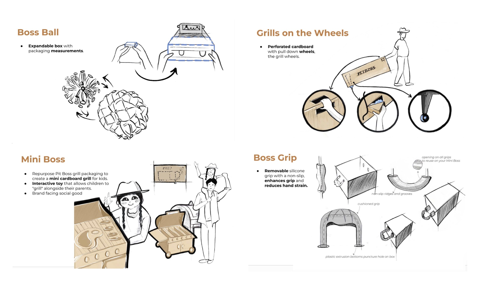
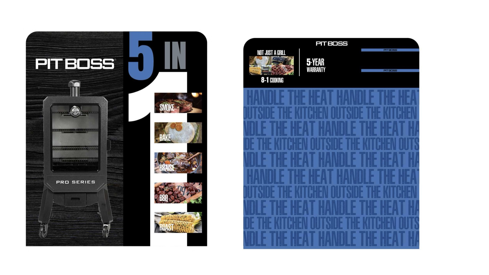
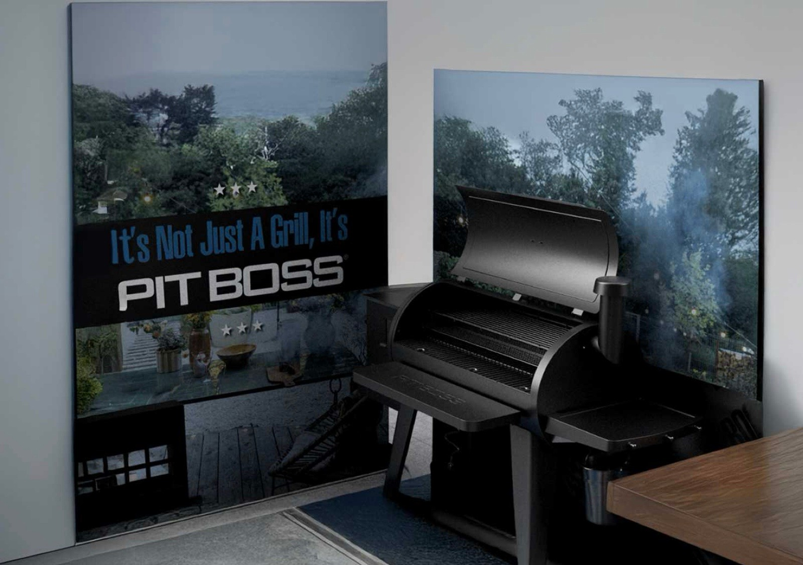

An in-store display for Dansons
Fewer staff on the floor since COVID means shoppers often can't find anyone to ask. With my team I redesigned the Pit Boss section as a place that explains the grill: a display, a self-service kiosk and a fresh brand system.
Dansons, the company behind Pit Boss, asked our studio to look at how their grills are sold. Since COVID, stores run with far fewer staff, so the person who used to explain a grill often isn't there.
We designed for that absence: a smart, approachable in-store assistant that still feels like help from a person.
Colour, typography, voice and messaging, with visual and verbal standards for every touchpoint.
The in-store layout, signage and a self-service flow.
An interface for product information, finding things and asking for help. See the kiosk project.
We observed shoppers at Walmart, Home Depot and Lowe's to see how people meet a grill and decide to buy one.
Walmart had one small Pit Boss model and a narrow aisle of brands. Home Depot and Lowe's had large grill sections, and both kept rows of grills outside the front doors, the first thing you see as you walk in.


Some grouped grills by brand, others mixed types together. Walmart's display was compact with little room to browse.
They opened lids, checked the grates and rolled grills to test them. Size, materials and extras like side burners decided the sale.
Many compared two grills next to each other, a sign they needed clearer differences between models.
Traeger owned its aisle: orange branding, clear placement and the first thing you see as you enter. Nexgrill, a few steps away, was hard to even spot, with no colour or brand presence.
Nexgrill leaned on QR codes to explain its models, which raised a question we kept asking: does everyone know how to use one, and what if it doesn't work?


We went back to three Home Depot and two Lowe's stores and read each visit through the AX4 lens, to find where the experience broke down when staff weren't around.
He knew the Pit Boss range, asked the right questions, pointed out deals and checked stock with a scanner. Other staff were polite but barely engaged.
Grills were clean and well labelled, but the assistance button was badly placed and took 5 to 10 minutes to bring anyone.
Browsing and stock checks were smooth. Help was thorough once it came, and buying offered online, pickup and financing.
Stores were clean, well lit and organised by brand. Service was friendly, after a delay.
Interviews at all three stores showed the problems don't end at the checkout. Getting the grill home and assembled hurt just as much as choosing it.


“I love shopping, but it's frustrating to wander the aisles searching for help, only to find unclear information on features and promotions.”
Customer at Home Depot
“Grilling is my escape, but transporting my new grill was a huge hassle. I didn't get accurate box measurements.”
Customer at Lowe's
“Grilling connects me with family, but a packaging mishap left my grill broken right when I was ready to light it up.”
Customer at Walmart
Back at Lowe's, I looked closely at the Pit Boss section itself.
At Lowe's, the grill sat on the floor and taught customers nothing. A person could walk past a very good grill and never learn what it does.


I sketched four directions, each solving a different moment between the shelf and the first cook.
Sketching all four showed where the gap was. It was not the box. It was the moment in the store when nobody explains the grill.

An expandable box.
Pull-down wheels on the packaging, so one person can move it.
Packaging that becomes a cardboard grill for kids.
A removable grip that makes the box easier to carry.
The direction became a display that stands around the grill and does the explaining a salesperson isn't there to do.
I drew the layout, then built it small in cardboard to check heights, sight lines and where a person would stand.


The panels say one thing clearly: five ways to cook in one grill. A shopper should get that in the two seconds they spend walking past.
A blue pattern ties the pieces together, so the section reads as one place from across the store.

I built a scale model with the graphics applied, to see how the panels, shelves and grill sit together from each side.
Walking around a model shows what a drawing hides: which panel blocks which, and what you see first from the aisle.


Before anything was built full size, I walked through the display in virtual reality to check heights, reach and what a shopper sees first from the aisle.

The grill stands in the middle, with the story of what it does around it.
Accessories and pellets sit within reach, so what it cooks, what it needs and what it costs to run are answered in one spot.



We presented the work at the end of the semester. It received the Design Excellence Award for Fall 2024 from the industrial design program at ASU.